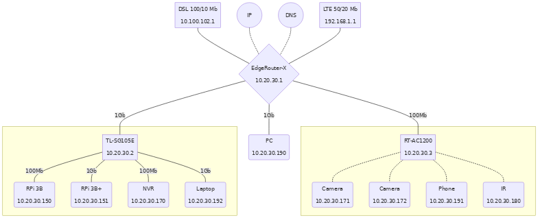

Suricata is a free and open source, mature, fast and robust network threat detection engine. The Suricata engine is capable of real time intrusion detection (IDS), inline intrusion prevention (IPS), network security monitoring (NSM) and offline pcap processing. Suricata inspects the network traffic using a powerful and extensive rules and signature language, and has powerful Lua scripting support for detection of complex threats. With standard input and output formats like YAML and JSON integrations with tools like existing SIEMs, Splunk, Logstash/Elasticsearch, Kibana, and other database become effortless. Suricata’s fast paced community driven development focuses on security, usability and efficiency. The Suricata project and code is owned and supported by the Open Information Security Foundation (OISF), a non-profit foundation committed to ensuring Suricata’s development and sustained success as an open source project.
Suricata Instrument has been tightly integrated into SensorFleet’s platform. We provide an easy way for system administrators to deploy Suricata IDS instances in the network. Rule Lists can be managed using either Rule Manager or Rule Importer instruments without resorting into a command line interface, as is the usual approach for plain Suricata installations.
| Instrument developer | SensorFleet Oy |
| Categories | Attack Detection, Traffic Analysis, IDS |
| Network access type | Passive |
| Required interfaces | Monitored network (mirror-bridge with receive capabilities) |
| Instrument dependencies | None |
| Related Instruments | Rule Manager, Rule Importer |
| Data retention | The latest rulelists are stored at Suricata Instrument persistent data. Events are exported to Sensor and respect Sensor’s data retention rules. |
| Management UI | No |
| Performance | Suricata Instrument should easily handle several gigabits of traffic on a F-Probe hardware on a typical traffic profile. |
A.K.A. pröystäilen mermaidilla t. keitsi
